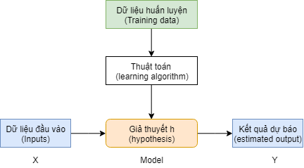
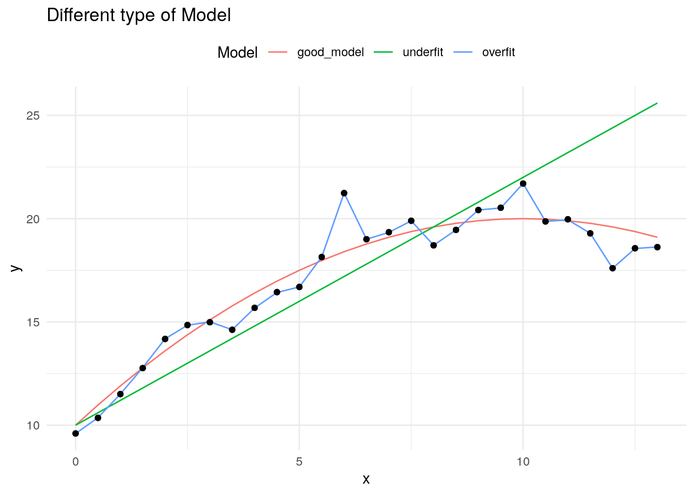

Trong chương này, chúng ta sẽ tìm hiểu những khái niệm và nguyên lý cơ bản nhất của học máy (machine learning hay statistical learning). Các nguyên lý này sẽ giúp ta nắm vững để có thể phát triển nhanh chóng trong lĩnh vực dự báo. Khi đã nắm vững các nguyên lý này, việc xây dựng mô hình với các thuật toán khác nhau sẽ không còn quan trọng nữa bởi tất cả sẽ đều phải đi qua các nguyên lý giống nhau.
18.1 Các nhánh trong học máy (machine learning)
Statistical Learning (SL) hay Machine Learning là nghành học sử dụng nhiều phương pháp và công cụ toán học khác nhau để tìm hiểu về cấu trúc của dữ liệu. ML có thể được chia thành 2 dạng: Định hướng & không định hướng:
Phân tích có định hướng trước (Supervised learning): Xây dựng các mô hình giữa biến phụ thuộc với một hoặc nhiều biến độc lập. Biến cần dự báo được gọi là biến phụ thuộc (target), các biến đầu vào được gọi là biến độc lập (input, feature). Các đối tượng (instances) được sử dụng trong việc xây dựng mô hình còn được gọi là quan sát (observation). Ví dụ:
Dự báo khách hàng vỡ nợ dựa vào các đặc trưng về nhân khẩu học và hành vi giao dịch của khách hàng.
Dự báo giá bán nhà phụ thuộc vào các tham số của ngôi nhà.
Các thuật toán như cây quyết định, logistics, mô hình hồi quy tuyến tính đều thuộc loại này. Tuy nhiên, tùy thuộc vào biến cần dự báo, ta lại có hai nhóm nhỏ sau:
Bài toán phân loại (classification): Khi biến phụ thuộc là các biến định dạng nhóm (category). Kết quả đầu ra của các mô hình dạng này là điểm xác suất xảy ra một sự kiện. Ví dụ, khách hàng tốt hay xấu, khách hàng mua hay không mua sản phẩm,… Các nhóm cần được dự báo trong mô hình gọi là positive class
Bài toán dự báo (regression): Khi biến phụ thuộc biến định dạng số liên tục. Ví dụ, giá trị của tổng các giao dịch một khách hàng có trong 1 tháng,…
Phân tích không định hướng trước(Unsupervised learning): Biến phụ thuộc chưa biết trước và mục tiêu của mô hình là tìm ra các mối qua hệ ẩn giữa các nhóm. . Ví dụ, phân nhóm khách hàng thành 5 nhóm các hành vi tương tự nhau. Các thuật toán như apriori, k-means, PCA, FA thuộc nhóm này. Các bài toán loại này có thể chia làm 2 nhóm lớn như sau:
Bài toán phân nhóm (clustering): Bài toán loại này giúp ta chia tập dữ liệu sẵn có thành nhiều nhóm khác nhau để sao cho đặc trưng của mỗi nhóm là gần nhau nhất
Bài toán tìm thành phần chính (PCA): Bài toán này giúp ta giảm số lượng các biến có sẵn trong dữ liệu gốc nhưng vẫn đảm bảo thể hiện được cấu trúc của toàn bộ dữ liệu
18.2 Cách xây dựng mô hình
Mô hình là cách thức thể hiện mối quan hệ giữa các biến thông quan các công cụ toán học. Do mô hình là cách thức đơn giản hóa mối quan hệ giữa các biến trên thực tế, do đó, mô hình còn được nhiều nhà phân tích gọi là giả thuyết. Khi xây dựng một mô hình dự báo, bản chất là ta dựa vào tập dữ liệu cho trước, áp dụng một thuật toán để đưa ra một mô hình (giả thuyết) về mối quan hệ giữa biến đầu vào và đầu ra.
Khi xây dựng mô hình, ta thường có ba tập dữ liệu
Train: Tập dữ liệu được sử dụng khi xây dựng (huấn luyện) mô hình
Test: Tập dữ liệu dùng để đánh giá chất lượng mô hình được xây trên tập train, cập nhật lại các hyper-parameters mô hình để đưa ra mô hình cuối cùng.
Validation: Tập dữ liệu độc lập dùng để đánh giá chất lượng mô hình cuối cùng
18.2.1 Sampling
Trong thực tế, ta có thể bỏ qua tập dữ liệu validation mà chỉ có hai tập dữ liệu train và test. Tỷ lệ train và test trong thực tế thường được chia thành 70-30, 80-20 hoặc 60-40. Khi chia tập dữ liệu phục vụ xây dựng mô hình, có hai cách chia chính.
Phân chia quan sát ngẫu nhiên thông thường (simple random sampling)
Phân chia quan sát sao cho phân phối của biến cần dự báo trên hai tập train và test giống nhau (stratified sampling)
Ví dụ về simple sampling
library(dplyr)# Cách 1: Sử dụng index thông thườngsize <-nrow(iris)train_index <-sample(1:size, size =0.7*size, replace = F)train <- iris[train_index,]test <- iris[-train_index, ]train$Species %>% table %>%prop.table()
# Cách 2: Sử dụng rsamplelibrary(rsample)split <-initial_split(iris, prop =0.7)train <-training(split)test <-testing(split)train$Species %>% table %>%prop.table()
Imbalance class: Đây là hiện tượng khi xây dựng mô hình, có 1 nhóm (class) chiếm tỷ lệ đa số trong tất cả quan sát (99%-1%, 95%-5%). Ví dụ: Fraud vs. Non Fraud. Do đó, khi gặp phải trường hợp bất cân bằng giữa các nhóm, ta cần phải thực hiện kỹ thuật lấy mẫu để giảm tỷ lệ bất cân xứng giữa các nhóm. Có hai phương pháp phổ biến nhất như sau.
Down sampling: Loại bỏ các quan sát thuộc nhóm chiếm đa số
Up sampling: Lặp lại các quan sát của nhóm thiểu số
§
Mô hình và việc xây dựng mô hình
Mô hình (hay giả thuyết h) giữa biến đầu vào và đầu ra được thể hiện như sau.
\[h_{\theta} = \theta_0 + \theta_1 \times X\]
\(h_{\theta}\) được gọi là giả thuyết hay mô hình.
\(\theta\) là tham số của mô hình.
Với các bài toán (supervised vs. nonsupervised) khác nhau, phương trình trên sẽ được thay đổi để phù hợp với bài toán thực tế.
Khi xây dựng mô hình, tất cả các thuật toán của ML đều trải qua ba bước cơ bản theo sơ đồ sau.
Bước 1: Xây dựng mô hình với tham số bất kỳ. Với mỗi mô hình, sẽ có các tham số khác nhau. Ví dụ, mô hình OLS, tham số là hệ số \(\beta\) trong mô hình \(y = \beta*X\).
Bước 2: Đo lường sai số mô hình so với thực tế.
Bước 3: Update lại tham số của mô hình để giảm thiểu sai số giữa mô hình và thực tế.
Thuật toán sẽ tiếp tục diễn ra cho đến khi sai số của mô hình nhỏ hơn 1 mức sai số định trước.
Với mô hình phân tích có định hướng (tồn tại biến Y cần dự báo), phương trình của mô hình dự báo có thể biểu diễn dưới dạng.
\[Y = f(X)\]
Trong đó:
Y được gọi là biến phụ thuộc (dependent variables)
X được gọi là biến độc lập (independent variables) hay biến dự báo (predictors)
Lưu ý:
Biến đầu vào X còn được gọi là features, predictor variable, independent variable, attributes, predictor, input
Biến dự báo Y còn được gọi là target variable, dependent variable, response, response variable, output
Mô hình còn được gọi là model, learners
§
Hyperparameters: Mỗi mô hình có các tham số cho phép thay đổi độ phức tạp của mô hình. Hyperparameters là tổ hợp các tham số để xây dựng thuật toán. Tuning hyperparameters là cách thức tinh chỉnh độ phức tạp của các tham số trong mô hình. Một thuật toán được gọi là có hyperparameter nếu mỗi lần thay đổi, ta sẽ có các mô hình khác nhau.
Ví dụ: Mô hình cây quyết định - hyperparameter là tổ hợp các tham số được cho trước khi xây dựng mô hình gồm số lá (leaf), số lần chia tối đa. Nếu điều chỉnh các chỉ số này, mỗi lần train mô hình sẽ ra các kết quả khác nhau.
Tuy nhiên, không phải thuật toán nào cũng có hyperparameters (ví dụ, OLS - mô hình hồi quy không có hyperparameters) nhưng phần lớn các thuật toán đều có tối thiểu 1 tham số. Để tìm kiếm tổ hợp tham số tốt nhất cho 1 mô hình, thường có 2 cách:
Grid search: Tổ hợp tất cả các trường hợp có thể có của tham số
Random search: Tổ hợp ngẫu nhiên các trường hợp có thể có
Với 2 cách trên, khối lượng công việc cần tính toán cũng rất nhiều. Do đó, ta có thể sử dụng early stopping để dừng việc tuning khi sai số mô hình đạt đến mức độ sai số cho phép (do data scientist xác định trước).
Phân biệt parameter và hyper parameter:
Tham số (parameter) được máy học thông qua quá trình huấn luyện 1 mô hình cụ thể
Siêu tham số (hyper-parameter) được máy học thông qua huấn luyện nhiều mô hình khác nhau để tìm 1 bộ siêu tham số tối ưu.
18.2.2 Xây dựng mô hình
Sau khi xây dựng, bước tiếp theo là sử dụng mô hình trong việc dự báo thực tế.
Quy trình xây dựng phân tích dữ liệu thực tế

18.3 Các nguyên lý trong dự báo
18.3.1 Reducible vs. irreducible error
Trong thực tế, mối quan hệ giữa X & Y được biểu diễn qua hàm sau: \[Y = f(X) + \epsilon \] Khi phân tích dữ liệu, ta tìm hàm \(\hat(Y)=\hat{f}(X)\) gần nhất với \(f(X)\). Sai số giữa thực tế và mô hình sẽ là:
Khi xây dựng mô hình, ta chỉ có thể giảm bớt phần reducible error mà không thể giảm được phần variance của sai số. Do đó, mô hình sẽ không thể đạt được độ chính xác 100% mà luôn tồn tại một mức sai số nhất định.
18.3.2 Khả năng giải thích và khả năng dự báo
Khi xây dựng mô hình, có hai khía cạnh cần phải xử lý:
Khả năng giải thích
Khả năng dự báo
§
Khả năng giải thích hay khả năng rút ra kết luận từ mô hình (inference): Nhấn mạnh đến khả năng diễn đạt ý nghĩa các biến trong mô hình. Các câu hỏi thường dùng là:
Biến độc lập (predictors) nào có quan hệ chặt chẽ với biến cần dự báo (dependent variables)?
Mối quan hệ giữa biến độc lập và biến dự báo là gì?
Mối quan hệ này có thể biểu diễn một cách đơn giản dạng mô hình tuyến tính hay phải mô tả dưới dạng phức tạp hơn?
Ví dụ về khả năng giải thích của mô hình:
Khách hàng trả nợ trễ hạn 3 lần sẽ làm tăng khả năng trốn nợ lên 20%
Giá giảm 10% sẽ khiên doanh thu tăng thêm khoảng 6%.
Các thuật toán như OLS, apriori, Logistics thuộc nhóm này.
§
Khả năng dự báo của mô hình: Ưu tiên hơn đến tính chính xác của mô hình dự báo, không quan tâm đến việc mô tả quan hệ giữa các biến. Ví dụ: Random Forest, Neuron Network, KNN
§
Nguyên lý: Khi xây dựng mô hình, ta buộc phải dánh đổi giữa độ chính xác của mô hình vs. khả năng diễn giải mô hình và không tồn tại một mô hình tốt nhất cho mọi trường hợp. Do đó, ta cần phải lựa chọn mô hình theo từng đối tượng. Mô hình có độ chính xác cao thường khó mô tả mối quan hệ giữa các biến (VD: decision tree) và ngược lại (VD: OLS)
18.3.3 Nguyên lý chữ U
Khi xây dựng mô hình, để đánh giá chất lượng, ta sẽ đo lường sai số trên tập train và tập test. Sai số của mô hình được tính như sau (với trường hợp regression)
Khi đánh giá chất lượng mô hình, ta cần đánh giá trên cả tập train và tập test. Thông thường, mô hình sẽ được xây trên tập train và được đánh giá trên tập test. Các tham số trên tập train sẽ được thay đổi để sai số mô hình được tối ưu. Số lượng tham số cần tối ưu càng nhiều, mô hình càng phức tạp.
Ví dụ: Ta cần dự báo \(income\), ta có hai mô hình sau.
Trong hai mô hình trên, mô hình 2 được gọi là phức tạp hơn mô hình 1 (compexity level).
Khi xây dựng mô hình, nguyên lý chữ U cho ta biết về sự thay đổi sai số trên hai tập train và test theo độ phức tạp của mô hình như sau.
Khi mô hình có độ phức tạp càng cao thì sai số của tập train sẽ ngày càng giảm trong khi sai số của tập test sẽ có dạng chữ U
Lưu ý:
Nguyên lý chữ U cho ta thấy, việc tăng thêm biến vào mô hình (# variables) không phải lúc nào cũng làm tăng chất lượng mô hình
Khi xây dựng mô hình, cần phải tìm được điểm cân bằng giữa độ phức tạp mô hình và độ chính xác. Điểm này chính là điểm thấp nhất trên đường chữ U của sai số trên tập test
18.3.4 Bias Variance Trade-Off
Bias là sai số giữa quan sát thực tế và kết quả dự báo kỳ vọng (kết quả dự báo trung bình) của mô hình.
Variance: là độ biến động của kết quả dự báo từ mô hình đã xây dựng với các tập dữ liệu khác nhau.
Những mô hình đơn giản là mô hình có bias cao nhưng variance thấp. Trong khi đó, các mô hình có độ phức tạp cao hơn lại có bias thấp và variance cao. Bias đại diện cho độ chính xác của mô hình trong khi variance đại diện cho độ khái quát hóa của mô hình. Mô hình có độ khái quát cao (generalization) sẽ có bias cao, variance thấp và ngược lại
Ví dụ:
Model 1 sử dụng median là mô hình dự báo có bias cao (sai số giữa thực tế và kỳ vọng) và variance thấp (tất cả các quan sát đều có chung 1 giá trị dự báo)
Mô hình 2 sử dụng sin(x) là mô hình dự báo có bias thấp (mô hình sát với thực tế) nhưng variance cao (mỗi quan sát sẽ có 1 giá trị dự báo khác nhau)
\(Var(\hat{f}(x_0))\): Phương sai của MSE trong tập test khi ta thay đổi tập training
\([Bias(\hat{f}(x_0))]^2\): Sai số của mô hình ước lượng \(\hat{f}(x)\) so với mô hình thực tế\(f(x)\). VD: Mô hình thực tế là \(y=x^2\), mô hình ước lượng là \(y=0.9*x^2\)
\(Var(\epsilon)\): Phương sai của nhiễu
Nguyên lý:
Variance của mô hình tăng thì Bias sẽ giảm và ngược lại.
§
Phương pháp tính toán sai số trong bài toán phân loại - The Classification Setting
Trong đó \(I(y_i \neq \hat{y_i}\) là “indicator variable”, có giá trị bằng 1 nếu \(y_i \neq \hat{y_i}\), có giá trị bằng 0 nếu \(y_i= \hat{y_i}\)
18.4 Các lưu ý khác
18.4.1 Mô hình có tham số cho trước hoặc không có tham số cho trước (Parametric vs. Nonparametric)
Đây là hai loại hai trường phái được sử dụng khi xây dựng các mô hình thống kê.
Parametric: Đưa ra mô hình biểu diễn mối quan hệ trước rồi sau đó ước lượng mô hình đưa ra. VD: OLS, Logistic Regression
Nonparametric: Không đưa ra mô hình, chỉ đưa ra phương pháp và để thuật toán tự động tìm kết quả. VD: Association rule, decision tree…
18.4.2 Overfitting & regularization
Khi xây dựng mô hình dự báo, có thể xảy ra 3 trường hợp:
Underfiting: Hiện tượng mô hình quá đơn giản, tính khái quát hóa cao nhưng dự báo không tốt, dẫn đến sai số cả ở tập train & test đều cao. Mô hình underfitting thường đi kèm với bias cao
Overfitting: Hiện tượng xảy ra khi mô hình hoạt động tốt trên tập train nhưng dự báo rất kém trên tập test. Mô hình loại này sẽ khiến sai số trên các tập dữ liệu khác nhau thường rất khác nhau. Do đó, overfitting còn đi kèm với variance lớn
Mô hình được xây dựng tốt: Là loại mô hình hoạt động tốt trên cả tập train & test.
3 trường hợp xây dựng mô hình được thể hiện ở hình dưới đây.
library(tidyverse)df <-data.frame(x =seq(0, 13, by =0.5)) %>%mutate(good_model =10+2*x -1/10*x^2) %>%mutate(y = good_model +rnorm(nrow(.), 0, 1)) %>%mutate(underfit =10+1.2*x) %>%mutate(overfit = y +rnorm(nrow(.), 0, 0.01))library(reshape2)df2 <- df %>%melt(id.vars =c("x", "y"))df2 %>%ggplot() +geom_line(aes(x, value, col = variable)) +geom_point(aes(x, y), col ="black", alpha =0.8) +theme_minimal() +theme(legend.position ="top") +scale_color_discrete(name ="Model") +labs(title ="Different type of Model",y ="y")

Để giải quyết vấn đề overfiting, ta có thể làm như sau:
Giảm biến bằng cách chọn biến thủ công hoặc áp dụng các kỹ thuật lựa chọn mô hình
Regularization: Kỹ thuật cho phép giữ nguyên số lượng biến đầu vào nhưng giảm giá trị của các tham số \(\theta\) trong mô hình
Regularization: Regularization cho phép tính toán giá trị của các tham số \(\theta\) trong mô hình, sao cho các giá trị của \(\theta\) càng nhỏ càng tốt. Hàm tối ưu hóa được thay đổi lại như sau.
Trong đó, \(\lambda\sum_{i=1}^n\theta_j^2\) được gọi là tham số regularization. Hệ số, \(\lambda\) sẽ quyết định vị độ mạnh của regularization. Nếu \(\lambda\) càng lớn, yếu tố làm giảm thiểu overfitting càng mạnh. Tuy nhiên, nếu \(\lambda\) quá lớn (ví dụ, \(10^{10}\)) sẽ khiến cho toàn bộ các tham số \(\theta\) trở về 0, và mô hình sẽ thay đổi từ overfitting sang underfitting.
18.4.3 Ensemble methods
Ensemble methods (tạm dịch: phương pháp kết hợp) là phương pháp tổng hợp nhiều kết quả khác nhau từ những mô hình riêng biệt để có thể xây dựng một mô hình có độ chính xác cao hơn.
Có 3 loại như sau:
Bagging: Xây dựng cùng lúc nhiều mô hình cùng loại trên nhiều tập con của train, mô hình cuối là tổng của các mô hình con (VD: Random Forest)
Boosting: Nhiều mô hình cùng loại trên nhiều tập con, mô hình sau học và đánh trọng số trên những trường hợp phân loại sai của mô hình trước đó (VD: GBM, XGBoost)
Stacking: Là phương pháp sử dụng nhiều mô hình khác loại, kết hợp để tạo thành 1 mô hình tốt hơn từng mô hình riêng rẽ. Xem ví dụ sau:
#Dữ liệu thực tế1111111111#Kết quả dự báo qua 3 classifier1111111100 (80%)0111011101 (70%)1000101111 (60%)#3 classifier theo số đông1111111101 (90%)
Lưu ý: Phương pháp này thực hiện tốt với những mô hình phân loại ít tương quan với nhau. Với những mô hình tương quan với nhau nhiều, mô hình này sẽ không áp dụng tốt. Xem ví dụ sau:
#Dữ liệu thực tế1111111111#Kết quả dự báo qua 3 classifier1111111100 (80%)1111011101 (80%)1111011101 (80%)#3 classifier theo số đông1111011101 (80%)
Các phương pháp stacking thông dụng:
Linear ensemble: trung bình có trọng số xác suất các dự báo của từng mô hình phân loại. VD: C1(A-80%, B-20%), C2(A-60%,B-40%) => Mô hình cuối C(70%, B-30%)
Max ensemble: Mỗi quan sát lấy xác suất lớn nhất trong tất cả các classifier. VD: C1(A-80%, B-20%), C2(A-60%,B-40%) => Mô hình cuối C(80%, B-40%)
Vote ensemble: Giá trị cuối được lấy vote theo từng classifier
Two step ensemble: Lấy điểm xác suất của mỗi mô hình làm biến đầu vào của data frame, sau đó áp dụng mô hình dự báo trên data frame mới.
18.5 Đánh giá chất lượng mô hình
Đối với mỗi bài toán khác nhau (regression & classification) sẽ có các chỉ số đánh giá chất lượng khác nhau.
18.5.1 Mô hình hồi quy
Với nhóm bài toán hồi quy, các chỉ số sau thường được dùng để đánh giá chất lượng mô hình.
MSE: Giá trị trung bình của bình phương sai số (Mean squared error) \(MSE = \frac{1}{n} \sum^n_{i=1}(y_i - \hat y_i)^2\). Mục tiêu: Tối thiểu hóa
MAE: Mean absolute error. \(MAE = \frac{1}{n} \sum^n_{i=1}(\vert y_i - \hat y_i \vert)\). Mục tiêu: Tối thiểu hóa
RMSLE: Root Mean Squared Log Error\[RMSLE = \sqrt{\frac{1}{n} \sum^n_{i=1}(log(y_i + 1) - log(\hat y_i + 1))^2}\]. Với MSE/RMSE, 1 quan sát có sai số lớn sẽ ảnh hưởng rất lớn đến chất lượng mô hình. Khi sử dụng RMSLE, sai số của mỗi quan sát sẽ có trọng số tương đồng hơn và phù hợp khi xây dựng mô hình có các giá trị biến thiên rộng. Mục tiêu: Tối thiểu hóa
\(R^2\): Chỉ số R-bình phương, cho biết tỷ lệ biến thiên của biến dự báo được thể hiện qua mô hình. Mục tiêu: Tối đa hóa
Trong các chỉ số trên, \(R^2\) và \(MSE\) là quan trọng nhất. Để nắm vững đánh giá chất lượng mô hình hồi quy, xem kỹ việc đánh giá và diễn giải chỉ số của mô hình OLS.
18.5.2 Mô hình phân loại
Đối với bài toán phân loại, các chỉ số sau là quan trọng nhát:
Misclassification: Tỷ lệ phân loại sai. Ví dụ: Có 2 nhóm Good vs. Bad. Tỷ lệ sai số mỗi nhóm là 10% và 20%. Tỷ lệ phân loại sai trên toàn bộ tập hợp là 30%. Mục tiêu: Tối thiểu hóa
Mean per class error: Tỷ lệ sai số trung bình trong mỗi nhóm. Trong ví dụ trên, tỷ lệ sai số trung bình mỗi nhóm là 15%. Mục tiêu: Tối thiểu hóa
MSE: Mean square error. Bình phương sai số từ xác suất dự báo đến 1 với class positive. Ví dụ, với positive class, điểm xác suất từ mô hình là 0.95, \(MSE = (1-0.95)^2\). Mục tiêu: Tối thiểu hóa
AUC: Area Under Curve. Được sử dụng để đo lường việc phân loại giữa 2 class trong mô hình phân loại 2 lớp (binary classification). Chỉ số này có giá trị trong khoảng 0-1. Mục tiêu: Tối đa hóa
Recall (Sensitivity): Trong 100 trường hợp thực tế là positive, mô hình dự báo được bao nhiêu trường hợp. Mục tiêu: Tối đa hóa
Precision: Trong 100 trường hợp dự báo là positive, bao nhiều trường hợp thực sự là positive.
Với các chỉ số trên, cần nắm vững chỉ số AUC, Recall và Precision. Để nắm vững đánh giá chất lượng mô hình phân loại, xem kỹ phần mô hình logistic.
18.6 Nhược điểm của máy học
Mặc dù máy học (machine learning) có thể giải quyết được rất nhiều vấn đề khác nhau trong cuộc sống. Tuy nhiên, ta không nên coi machine learning là chìa khóa vạn năng có thể giải quyết mọi vấn đề. Ngược lại, machine learning gặp nhiều hạn chế như sau.
Không áp dụng được với tập dữ liệu hoàn toàn mới: Do các thuật toán của máy học được xây dựng dựa trên dữ liệu của quá khứ, các thuật toán này sẽ không dự báo được chính xác với tập dữ liệu hoàn toàn mới.
Ví dụ: Mô hình dự báo khách hàng churn tại Mỹ sẽ không thể áp dụng được tại Việt Nam và ngược lại.
Chính vì lý do này, trong các ứng dụng của học máy, các bài toán nhận diện hình ảnh, âm thanh lại là nhóm được tái sử dụng nhiều nhất do dữ liệu hình ảnh, âm thanh được chuẩn hóa và khá tương đồng với các tập dữ liệu khác nhau.
Khó giải thích: Phần lớn các thuật toán (ngoại trừ linear model) đều thực hiện nhiều phép biến đổi toán học phức tạp và là tổ hợp của nhiều mô hình con (bagging, boosting). Vì vậy, kết quả dự báo của từng quan sát rất khó giải thích và gây ra nhiều khó khăn khi thuyết phục các đơn vị kinh doanh chấp nhận sử dụng kết quả từ mô hình. Để khắc phục nhược điểm này, hiện tại machine learning đang phát triển ngành học máy có giải thích, giúp tập trung giải thích cả global prediction và local prediction.
Đòi hỏi chất lượng và khối lượng dữ liệu: Các mô hình ML chỉ có thể giải quyết tốt khi chất lượng cũng như khối lượng dữ liệu (số quan sát, số biến) đầu vào đạt ở mức độ nhất đinh. Trong nhiều trường hợp, ta không thể áp dụng các bài toán machine learning mà phải thay thế bằng các kỹ thuật phân tích khám phá dữ liệu.